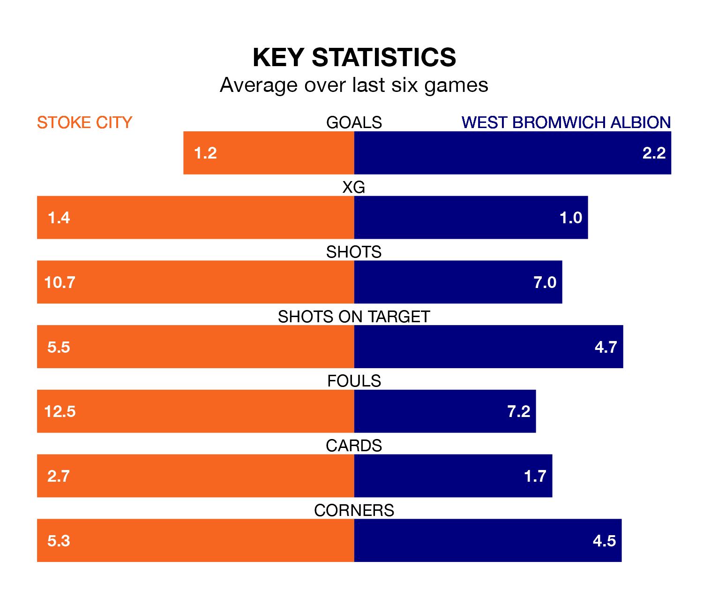

West Bromwich Albion face Stoke City on Saturday seeking to protect their formidable unbeaten run in EFL Championship.
The Baggies are unbeaten in eight, with four wins and four draws, ahead of the 3pm kick-off.
They face a Stoke team who have won three and drawn one over the same number of games.
In Alex Palmer, West Bromwich can rely on one of the league's safest pair of hands. He has kept 16 clean sheets in his 40 appearances this season, and only one other 'keeper – Leeds United's Illan Meslier – has been able to prevent the opposition scoring on more occasions in EFL Championship.
In Stoke's net, Jack Bonham has five clean sheets in 14 games. He has conceded a goal every 84 minutes, 20% more often than the 100 minutes between goals for Palmer.
With 38 goals in 40 games so far this season, City are scoring at below the league average rate with 0.9 goals per game. And they are conceding at an average rate, letting in 54 goals at a rate of 1.4 per game.
Albion, meanwhile, are above average scorers, with 1.6 goals per game, compared to a league average of 1.4. They have conceded 1.0 goal per game.
In the last 10 years, Stoke and West Bromwich have played each other on 19 occasions. Stoke won seven of them, West Bromwich nine, and they drew three times.
On average, the Potters scored 1.1 goals and the Baggies 1.1 in those matches.
Their last meeting was on December 17, when they played out a 1-1 draw.
The Baggies are fifth in the table after 40 games, of which they have won 19 and drawn 11, earning 68 points.
The Potters are 13 places behind the away team in 18th, with 12 wins and nine draws putting them on 45 points.
Stoke's last match was on Monday, a 1-1 draw against Huddersfield Town, with Ki-Jana Hoever getting the goal for the Potters.
West Bromwich drew 2-2 with Watford last time out, also on Monday, with Brandon Thomas-Asante and Darnell Furlong on the scoresheet.
Updated: 16:41 (UTC), 04/04/24